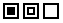
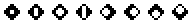

一组图标用于表示各种建筑组件，例如气流路径（表示门、窗、裂缝等）、污染物源和水槽、居住者和空气处理系统。你 使用鼠标右键将图标放置在 SketchPad 上 显示弹出菜单 然后从菜单中选择所需的建筑组件。您还可以使用 T 工具 → 抽奖 Icon 菜单和关联的键盘快捷键，用于放置可通过弹出菜单放置的建筑图标。
图标放置菜单是上下文相关的。您可以从图标放置菜单中选择的菜单选项将取决于插入符号占用的单元格的内容以及 SketchPad 当前是否正在显示模拟结果。 显示结果时，您将无法在 SketchPad 上放置其他图标或从 SketchPad 中删除图标。 这样做是为了防止由于 SketchPad 上的图标数量与上次模拟中可用结果的图标数量不匹配而在 SketchPad 上显示误导性结果。图标放置菜单还会阻止您将图标放置在无效的 SketchPad 位置上。例如，您不能将简单空气处理系统的送风或回风放置在环境房间内。
| 图标 | 键盘快捷键 |
| 专区 | Z |
| 环境 | A |
| 幻影 | P |
| 流路 | F |
| 空气处理系统 | H |
| 供应（入口） | I |
| 返回（出口） | O |
| 源/汇 | S |
| 曝光 | X |
| 注释 | N |
表 - 用于在 SketchPad 上放置图标的键盘快捷键
图 - 图标放置菜单（右键单击 SketchPad）
下表是您将在 ContamW SketchPad 上看到的图标列表。此列表按建筑组件类别显示图标。其中一些图标使用绘图工具放置在 SketchPad 上，其他图标使用弹出图标放置菜单放置。
| 图标类别 | 组件图标 |
| 墙壁 |
|
| 房间 |
 |
| 风管段 | |
| 风管接头 | |
| 管道端子 | |
| 简单 AHS |
|
| 气流路径 |
 |
| 源/汇 | |
| 居住者 |
|
| 控制 |
表 - CONTAM SketchPad 图标（以默认颜色显示）